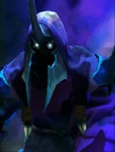
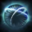

Not in the normal shop. This is one of the “spare” Undead pieces: you mainly get it when a piece holding an Ascetic's Cap is reborn as a random Undead, or through Pandaren fishing.

Aphotic Shield
Active ability: Activates on Full Mana
Summons dark energies around a most-damaged ally unit, creating a shield that absorbs a set amount of damage before expiring. When the shield is destroyed it will burst and deal damage equal to the amount absorbed to an area of 3-grid radius around it.
| ★ | ★★ | ★★★ | |
|---|---|---|---|
| Duration | 15.0 | ||
| Radius | 300 | ||
| Damage absorb | 150 | 200 | 250 |
| Mana cost | 100 | ||
The powers of the black mist rise to absorb attacks like the black mist absorbs light.
Stats
| ★ | ★★ | ★★★ | |
|---|---|---|---|
| Health | 700 | 1400 | 2800 |
| Mana | 100 | 100 | 100 |
| Armor | 3 | 3 | 3 |
| Magic resistance | 20% | 20% | 20% |
| Attack damage | 45–55 | 90–110 | 180–220 |
| Attack interval (s) | 1.3 | 1.3 | 1.3 |
| Attack range | 205 | 205 | 205 |
| Move speed | 500 | 500 | 500 |
 Undead · Plague
Undead · Plague
- (3) All non-Undead pieces on the board lose 10% max HP.
- (6) They lose another 30% (-40% total).
- (9) Plagued pieces also lose 5% max HP every 2s, down to a minimum of 5% of their base max HP.
 Knight · Divine Protection
Knight · Divine Protection
With the (2) Knight bonus, a Knight next to another friendly Knight starts the battle with a shield. It lasts until the Knight starts acting.
- (2) Knights get a 25% chance every 3s to gain a 3s shield (-35% physical and magical damage taken).
- (4) All allies get a separate 25% chance every 3s to gain a 3s shield.
- (6) All allies get another separate 25% chance every 3s to gain a shield. Every shield proc heals the unit for 500.